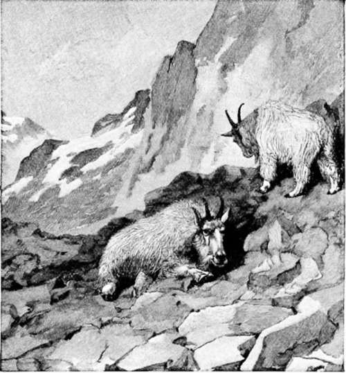

Climbing For White Goats
Description
This section is from the book "Hunting", by Archibald Rogers. Also available from Amazon: Hunting.
Climbing For White Goats
THE white goat lives above timber line, among the rocks, along the narrow ledges, and in the fissures of towering precipices, by snow fields and glaciers. Really it is not a goat at all, but an antelope, —the analogue and not distant relative of the European chamois. It has horns and a beard; and for no better reason than this, the western American, with his faculty for seizing on any salient characteristic, has called it goat. So in the vernacular these animals, young and old, are billies, nannies, and kids, and will be so always.
This Alpine antelope is about the size of a sheep, and is remarkable in being white. Now, nothing is more conspicuous against the summer landscape than a patch of white. On the other hand, many birds and mammals inhabiting snow-clad regions have white plumage or fur, and are thus invisible at a little distance. The goat is one of the mammals thus protected. Its life is passed high up on lofty mountains, often among fields of ice and snow, or at least where snow remains in patches and drifts almost throughout the year. Amid such surroundings it is mere accident if a white animal is seen by the hunter.
The short, sharp, backward-directed horns, the stout hoofs, and the margins of the eyes and lips, are black. Young individuals have the long hair on the ridge of the back gray, which, perhaps, points back to ancestors which were not white, but were gray in color like a Japanese relative of this species.
The goat is an animal of the north; yet since altitude often answers for latitude, so we sometimes find it far to the south of its usual range; for example, on Mount Whitney, in California, where goats are abundant, though none of their kind can be found for hundreds of miles to the north. Like certain Alpine butterflies, which occur each summer on Mount Washington, in New Hampshire, and are not found elsewhere south of Labrador, so on some isolated mountain-tops the goat has been cut off from the rest of his race, and still persists in little colonies living alone.
The goat likes regions of great precipitation, and is most abundant in the high mountains where much snow or rain falls. This explains its absence from the southern portion of the continental backbone. Wyoming, Colorado, and New Mexico have many peaks high enough to give it the temperature which it requires; but it is not found in those regions because of their aridity. The goat occurs abundantly in northwestern Montana, Idaho, Oregon, and Washington, and all through the mountain ranges of the British possessions and Alaska, north toward the Arctic Ocean, where the mountains become lower and sink down to meet the seashore. Besides this territory over which the species is generally distributed, there are a number of out-lying localities, like Mount Whitney, a peak or two in Colorado, and a few other points where white goats have been found.
The White Goat's Home.
For most of the year the animal wears a shaggy coat of long, coarse hair, beneath which lies a heavy under-fleece of white cotton-like wool of very fine texture. The long, coarse top-coat sheds the rain or the snow like a thatched roof, while the under coat is thus protected from the wet, and keeps the heat in and the cold out. Although the goat is generally a shaggy, rough-looking creature, yet in summer it sheds its coat, and for a time is almost as naked as a newly-shorn sheep. If it could be obtained in commercial quantities, the wool of the white goat would be valuable. Specimens which I furnished some years ago to Dr. Thomas Taylor, Microscopist of the Agricultural Department at Washington, were called by some wool experts fine Cashmere wool; by others, Australian fine; and by still others, fine wool from various foreign ports. Dr. Taylor pronounced the wool finer than Cashmere wool. In the mountains of British Columbia, excellent blankets are woven from this wool by the Indians. The fleece is shaved from the hide with a sharp knife, and the yarn twisted by the women, who roll the wool under the hand on the bare knee. A simple loom is used for weaving; and the blankets made are not only thick, warm, and serviceable, but also sometimes very beautiful.
The white goat is occasionally captured alive. Full grown ones will not live in captivity, nor will captives survive when removed from their native mountains. Those taken as kids, however, become perfectly tame, wandering away to feed during the day, and at night returning to the house.
Although the goat is nearly related to the chamois, it has little of the activity of that nimble species. The bighorn is the runner and jumper of the Western mountains, while the goat is the plodder. He gets over the ground and climbs the loftiest peaks "by main strength and awkwardness." The bighorn rushes away along the mountain-side at a headlong pace, the alarmed goat starts straight for the mountain-top at a rate which seems slow, often no more than a walk, but which is so steady and continuous that it soon carries the animal out of the way of danger. The goat does not very often run, nor does it often raise its head to look about it like a deer or a wild sheep. Usually, even after being shot at, it holds its head low, and seems to regard one from beneath its eyebrows. When at last convinced that there is danger, it moves off, either slowly pulling itself up over the rocks, or if the way is level, going with a swinging, sidelong gait, which reminds one of a pacing dog.
But the goat does not always run away. Sometimes, in its simplicity, it turns to fight. An acquaintance of mine who discovered one lying under a shelf of rock took his hunting companion above it and up to within fifteen or twenty yards of it, and then, by throwing stones at it, attempted to drive the game out to where the hunter could see it. To his astonishment, the animal bristled up in fury and was advancing as if to attack him, when the hunter shot it. The male goats are quite pugnacious among themselves, and often those killed bear evidence of severe battles which they have had with others of their kind.
Continue to:
- prev: Camping And Hunting In The Shoshone. Part 10
- Table of Contents
- next: Climbing For White Goats. Continued